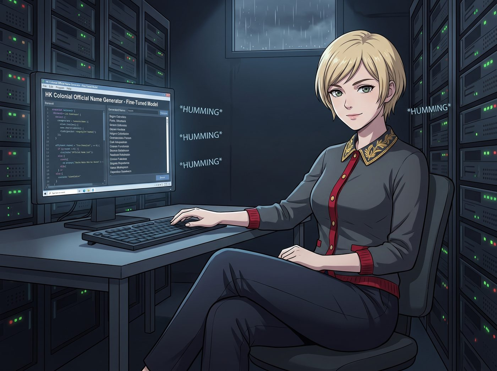

廢可樂

伴隨著伺服器輕微的嗡嗡聲，Victoria 纖細的手指在鍵盤上敲下最後一個回車鍵。為了打發奧林匹亞半島漫長的雨季，這位名媛剛從實習生 Lily 的資料庫裡，翻出了一個專門針對港英時期長官信達雅命名法進行微調的語言模型。
「在資本市場上，一個極具底蘊的東方名字能讓妳的報價自動上漲百分之十五。」Victoria 優雅地交疊著雙腿，向沙發上的眾人展示螢幕上的輸出結果，「系統為我生成的全名是卓維雅。『卓』取自 Chase 的發音與卓越之意，『維雅』保留了 Victoria 的高貴音節。聽起來就像是某個擁有太平紳士頭銜、經常在半島酒店喝下午茶的頂級紳士。」
「這名字確實有一種隨時準備收購別人公司的壓迫感。」Max 湊過去，好奇地輸入了自己的名字 Maxine Caulfield。
AI 停頓了半秒，吐出三個字：柯敏思。
「『柯』對應 Caulfield，『敏思』代表著 Maxine 那種敏銳的洞察力與深邃的思考。」Lily 坐在工作台前，一邊喝著熱牛奶一邊溫柔地給出註解，「非常完美的文人譯名，Max 學姐。聽起來像是一位戴著玳瑁眼鏡、經常在獨立雜誌上發表紀實攝影專欄的特約學者。」
Max 滿意地摸了摸下巴，覺得這個名字完美契合了她身為復古文青的靈魂。
接著是 Kate Marsh。小天使紅著臉在鍵盤上敲下自己的名字，AI 給出的結果是：馬潔慈。
「Marsh 化用為『馬』，『潔慈』則是聖潔與仁慈的完美結合。」Victoria 難得地給出了正面的評價，「Kate，這名字簡直像是在某個慈善晚宴上，專門負責為孤兒院籌款的榮譽會長，充滿了毫無破綻的道德光環。」
Kate 開心地雙手合十，覺得這個名字充滿了上帝的恩典。
一、街頭霸氣的終極歸宿
「讓開讓開！讓老娘看看什麼叫真正的街頭霸氣！」Chloe 粗魯地擠開 Victoria，把自己的名字 Chloe Price 狠狠敲進對話方塊，「給我生成一個聽起來就像洪門老大、隻手遮天的狠角色！」
螢幕上的進度條轉了兩圈，彈出了一個極度符合大英帝國殖民地官員音韻學的三字名：費可珞。
「『費』對應 Price 的首音節與代價的隱喻，『可珞』對應 Chloe 的發音，同時『珞』字代表堅硬的玉石，象徵著 Price 學姐堅不可摧的叛逆精神。」AI 甚至還在下方貼心地附上了一段極其文雅的釋義。
「費、可、珞。」Chloe 雙手抱胸，得意洋洋地咀嚼著這三個字，「聽起來有一種隱世武林高手的美感！就像是那種穿著黑色唐裝、一腳能踢碎防彈玻璃的狠角色。Victoria，妳那個喝下午茶的『卓維雅』在我的『費可珞』面前，絕對活不過三秒鐘！」
就在 Chloe 準備為自己的新名字開一罐啤酒慶祝時，角落裡突然傳來了一陣極其詭異的動靜。
二、實習生的憋笑與殘酷真相
實習生 Lily 正死死咬著自己的下嘴唇，雙手用力抓著小熊睡衣的下襬。她那張平時總是波瀾不驚、彷彿隨時準備起草聯邦訴訟的臉龐，此刻正因為極度的憋笑而漲得通紅，肩膀正在以一種極高頻率瘋狂抖動。
「Lily？妳怎麼了？被駭客攻擊大腦了嗎？」Max 擔憂地看著她。
「噗……咳咳咳……對不起，Max 學姐，我受過嚴格的合規訓練，無論多好笑我都不會笑的，除非……咳咳……」
Lily 終於忍不住了，她捂住肚子，把臉埋在鍵盤上，發出了斷斷續續的、極度失態的悶笑聲。
「妳到底在笑什麼，實習生？」Chloe 敏銳地察覺到了不對勁，握緊了手裡的啤酒罐，「我的名字有什麼問題嗎？它不是代表著堅硬的玉石嗎？！」
Lily 艱難地抬起頭，推了推因為笑得太厲害而滑落的圓框眼鏡，大眼睛裡甚至笑出了淚花。她深吸了一口氣，努力用最學術、最平靜的語氣，向這位對東亞方言一無所知的阿卡迪亞灣街頭霸王，進行了一次殘酷的跨語言降維打擊。
「Price 學姐……AI 的字面翻譯確實非常信達雅。」Lily 擦了擦眼角，「但如果您用這個名字去走訪香港或廣東地區的街頭，『費可珞』在當地語言的發音裡，會無縫諧音成另一個詞。」
「什麼詞？」Victoria 已經做好了看好戲的準備。
「廢可樂。」Lily 乖巧地吐出這三個字，「就是那種被打開放在桌上三天、裡面的氣泡已經全部跑光、喝起來像糖水一樣的、沒有靈魂的廢棄碳酸飲料。」
三、無能狂怒的崩潰
車廂裡陷入了死一般的寂靜。
Max 默默地舉起了拍立得。Kate 捂住嘴巴發出了一聲充滿同情的「噢」。而 Victoria 則直接倒在沙發上，爆發出了今天最響亮、最名媛的狂笑聲。
「廢可樂！哈哈哈哈哈哈哈！」Victoria 笑得直不起腰，指著 Chloe 瘋狂嘲諷，「妳還想去隻手遮天？別人只會問妳是不是鋁罐回收站撿來的！這就是妳叛逆街頭精神的終極歸宿——一罐沒氣的糖水！」
「這個該死的破銅爛鐵！！」
Chloe 的臉瞬間漲成了豬肝色，她一把抓起桌上的扳手，朝著那台裝著 AI 的伺服器衝了過去：「我要砸了它！把它連同這該死的港英信達雅資料庫一起炸成碎片！」
「Price 學姐請冷靜！破壞硬體設備無法撤銷文化屬性上的諧音創傷！」Lily 一邊笑得直喘氣，一邊從背後死死抱住 Chloe 的腰。
四、不服輸的第二回合
「我不信邪！」
Chloe 滿臉通紅地推開實習生，像個輸光了籌碼但準備抵押最後一條褲子的賭徒，雙手重重地砸在鍵盤上。
「剛才是因為名字太短，AI 發揮不出老娘的底蘊！這次我加上我的中間名！」Chloe 一邊咬牙切齒地說著，一邊將自己的全名 Chloe Elizebeth Price 狠狠地敲進了對話方塊，「Elizebeth！這可是英國女王的名字！我看這破 AI 這次還能給我翻出什麼沒氣的碳酸飲料來！」
Victoria 饒有興致地端起咖啡，Max 也放下了相機，所有人都屏住呼吸，看著螢幕上的進度條緩緩轉動。
半秒鐘後，AI 吐出了三個極具東方古典美學、甚至帶著一絲貴族氣息的繁體字：費楚莉。
AI 依然貼心地附上了那段堪稱文學鑒賞級別的註解：「費」保留了 Price 的莊重姓氏；「楚」取自 Chloe 的發音，意為清晰、標緻與楚楚動人；「莉」則精準對應了 Elizebeth 的尾音，象徵著高貴潔白的茉莉花，完美呼應了英國王室的優雅傳統。此名寓意：一位明豔動人、出身高貴且品格如茉莉般高潔的頂級名門淑女。
「哈！看到了沒有？！」Chloe 興奮地一拍桌子，剛才的陰霾一掃而空。她雙手叉腰，像個剛打贏了勝仗的將軍一樣睥睨著 Victoria：「費、楚、莉！聽聽這名字！不僅保留了我洪門老大的霸氣『費』，還加入了王室級別的高貴！我現在不僅是個狠角色，我還是一個明豔動人的名門淑女！Victoria，老娘現在的階級跟妳平起平坐了！」
Victoria 微微挑起一邊眉毛，雖然覺得哪裡怪怪的，但單從字面上看，確實無懈可擊。
就在 Chloe 準備再次開一罐啤酒來慶祝自己的階級躍升時，工作台那邊傳來了「砰」的一聲悶響。
五、終極聖光暴擊
實習生 Lily 的額頭重重地砸在了桌墊上。
這一次，Lily 連咬嘴唇都放棄了。她整個人趴在桌子上，肩膀的抖動頻率比剛才還要誇張十倍。她發出了一種類似於氣管哮喘發作、又像是某種小動物快要窒息的微弱抽氣聲。
「Lily？妳別嚇我，妳是不是需要人工呼吸？」Max 慌了，連忙走過去拍著實習生的背。
「不……不用……呼……」Lily 艱難地從桌面上撐起半個身子，臉頰已經因為極度缺氧而憋成了紫紅色。她的眼淚完全止不住地往下流，推眼鏡的手都在劇烈發抖。
「實習生，妳要是敢說這名字又有什麼諧音，我發誓我會把妳和這台伺服器一起扔進太平洋。」Chloe 的笑容僵在了臉上，手裡的啤酒罐被捏得嘎吱作響。
「Price 學姐……我發誓……AI 的本意真的是好的……」Lily 抽出面紙擦著眼淚，深吸了三大口氣，試圖調動自己畢生的行政合規素養來保持嚴肅，但聲音依然在瘋狂發飄。
「那妳在笑什麼？！」
「因為在現代漢語的工業與行政術語中……」Lily 咬著牙，以一種極其殘忍的溫柔，宣判了街頭霸王的死刑，「『費楚莉』這三個字的標準發音，會被大腦無縫解析為另一個非常嚴肅的市政工程詞彙。」
「說。」Chloe 的聲音已經冷得像冰了。
「廢處理。」
車廂裡的空氣，在這一秒鐘，彷彿被某種超自然力量徹底抽乾了。
「全稱是……」Lily 為了確保學術嚴謹性，甚至還補上了最後一刀，「廢棄物處理廠。」
「噗——咳咳咳咳！」Victoria 這次是真的把咖啡噴出來了。她毫無形象地倒在沙發上，雙腳在半空中亂蹬，笑得連那件真絲睡袍都從肩膀上滑了下來：「哈哈哈哈哈哈！老天啊！從一罐廢可樂，直接升級成了整個城市的廢棄物處理中心！！Price，妳的階級確實躍升了！妳現在是不可或缺的市政基礎設施了！哈哈哈哈！」
Max 已經笑得拿不穩相機了，她靠在牆上，笑得肚子抽筋：「Chloe……妳的王室血統……變成環保工程了……」
「這該死的機器！！」
Chloe 徹底崩潰了。她的臉紅得像一顆即將爆炸的番茄，理智的弦「啪」的一聲斷得乾乾淨淨。這一次，她連扳手都不拿了，直接衝上去，一把拔掉了那台本地伺服器的電源線。
伴隨著一陣風扇停轉的嗡嗡聲，「廢處理」淑女的賽博生命被物理終結了。
就在 Chloe 氣喘吁吁地站在漆黑的螢幕前，覺得自己已經受盡了這個世界的屈辱時，廚房裡的 Kate 探出了頭。
小天使顯然沒有搞清楚剛才發生了什麼，她只聽到了最後幾個詞。
「Chloe，妳的名字意思是『廢棄物處理』嗎？」Kate 雙手交握在胸前，眼睛裡閃爍著無比崇敬的聖潔光芒，溫柔地讚美道，「這真是一個偉大又無私的名字呢！把這個世界上的污穢和垃圾都包容、淨化掉，這不是和耶穌基督為我們洗清罪惡一樣的神聖使命嗎？Chloe，妳的靈魂真的很美麗！」
這記來自小天使的終極聖光直擊，成為了壓垮街頭霸王的最後一根稻草。
「我恨這個車廂，我恨數位時代，我更恨信達雅……」Chloe 雙眼無神地扔下啤酒罐，像一具失去了靈魂的喪屍，搖搖晃晃地走回自己的房間，「砰」的一聲甩上了門。
而工作台前，實習生 Lily 終於可以毫無顧忌地趴在桌子上，繼續她那場幾乎要笑斷氣的狂歡了。